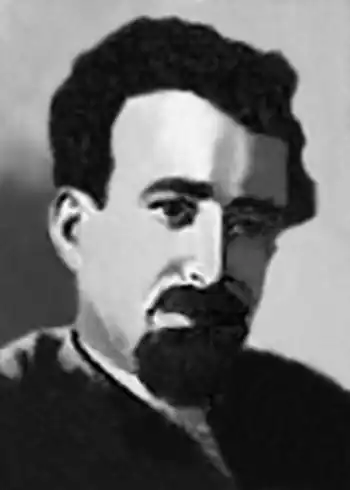

Справжнє прізвище Микола Любченко. Народився 29.02.1896 р. у Києві в родині поліцейського службовця. Після закінчення київської гімназії у 1914 р. вступив на філологічний факультет Київського університету. Провчився рік і кілька місяців. Наприкінці 1915-го почав працювати діловодом у військово-дорожньому загоні шляхів сполучення. У 1917 р. переїхав до Бердичева, де почав друкуватися у місцевій газеті.
У 1918-му вступив до підпільної партії боротьбистів. За революційну діяльність був тричі заарештований. У березні 1920 р. Любченка прийняли до Комуністичної партії большевиків. Працював референтом у Народному комісаріаті закордонних справ, першим секретарем повпредства у Варшаві, радником повпредства у Празі, редактором газети "Киевский пролетарий", членом редколегії газети "Комуніст".
Публікував статті, фейлетони, памфлети, гуморески у багатьох часописах. Видав 20 книжечок гумору й сатири: "Петлюрія" (1921), "Чудоправ-майстри" (1922), "Без штепселя", "Дивовижна пригода з гречкою", "Обличчям до спини", "Як воно там за кордоном" (1927), "Істукрев", "Сонце поза мінаретами", "Сто годин на добу" (1928), "Теж люди" (1929), "Останній полон", "Щоденник кількох міст" (1930), "Трагедія і фарс" (1933). 4.12.1934 р. чекісти влаштували у його київському помешканні обшук і арештували. 14.01.1935 р. М. Любченка виключили з членів ВКП(б) "як активного учасника контрреволюційної організації". Спочатку на допитах Любченко усе заперечував, та врешті змушений був визнати свою "приналежність до боротьбистського крила блоку контрреволюційних націоналістичних сил". 28.03.1935 р. його засудили на 10 років з конфіскацією майна і відправили на Соловки. Коли він перебував у Білбалтлагері, 25.11.1937 р. його засудили до розстрілу. Вирок виконали у Ленінграді 8.12.1937 р. Замолоду писав лірику, яка була опублікована в "Альманаху трьох" (1920), пізніше публікував віршовану сатиру у "Червоному Перці".